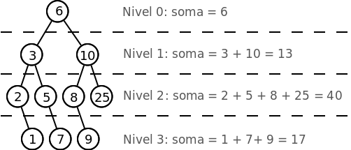

Pode assumir que o Mooshak terá acesso às classes descritas no enunciado do exercício 2 da aula prática.
public static int[] sumLevels(BTree<Integer> t) da
classe ED212
Deve um array contendo a soma dos nós de cada nível. O array deverá ter tamanho igual ao número de níveis e ter as somas do primeiro para o último nível..
A figura seguinte ilustra uma árvore binária. Para esta árvore, o resultado do método deve ser o array [6, 13, 40, 17].

O primeiro exemplo corresponde à árvore da figura do enunciado.
| Árvore t (em preorder com N a ser uma subárvore nula) |
sumLevels(t) |
|---|---|
| 6 3 2 N 1 N N 5 N 7 N N 10 8 N 9 N N 25 N N | [6, 13, 40, 17] |
| 1 2 3 4 5 6 N N N N N N N | [1, 2, 3, 4, 5, 6] |
| 14 4 3 N N 9 7 5 N N N N 18 16 15 N N 17 N N 20 N N | [14, 22, 48, 39, 5] |
Conteúdo de Fernando Silva (DCC/FCUP), migrado de dcc.fc.up.pt/~fds/aulas/EDados/2526/praticas/problems/prob212.html.